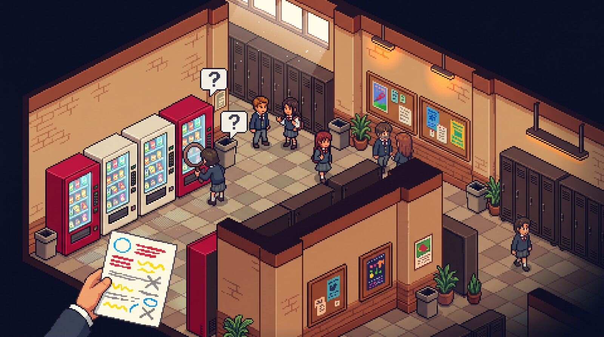
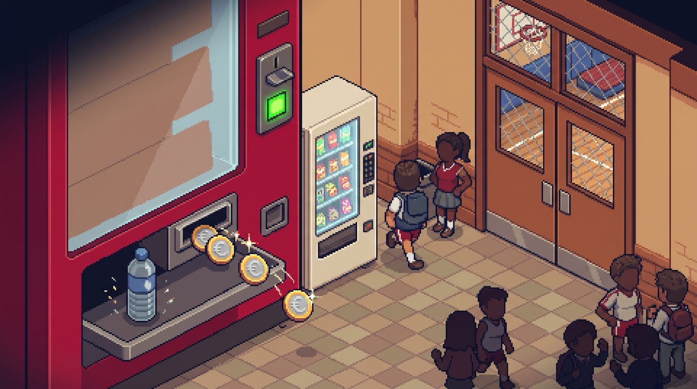
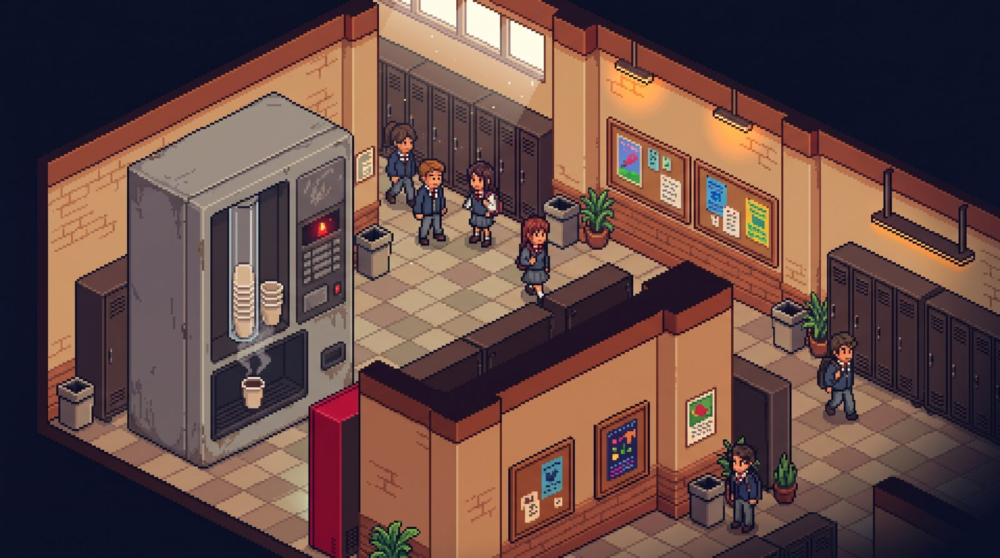
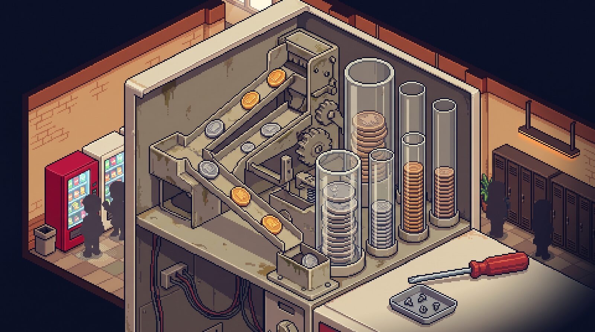
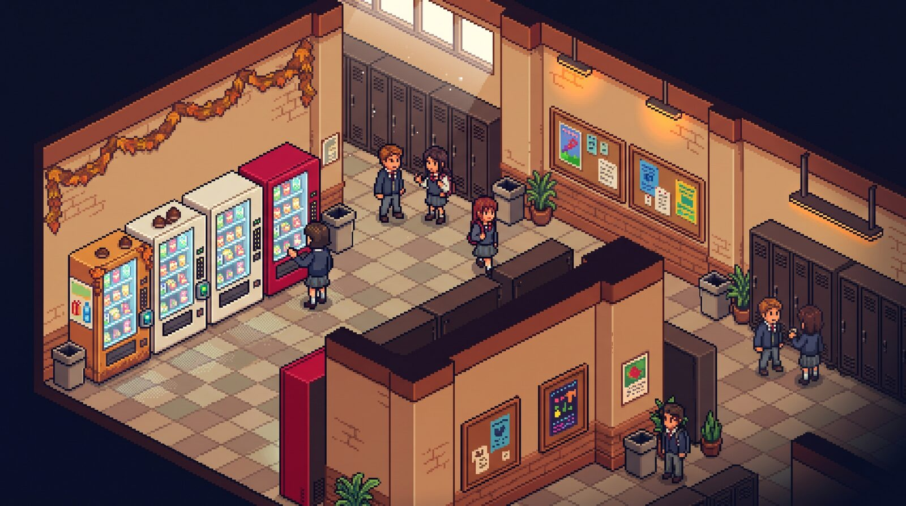
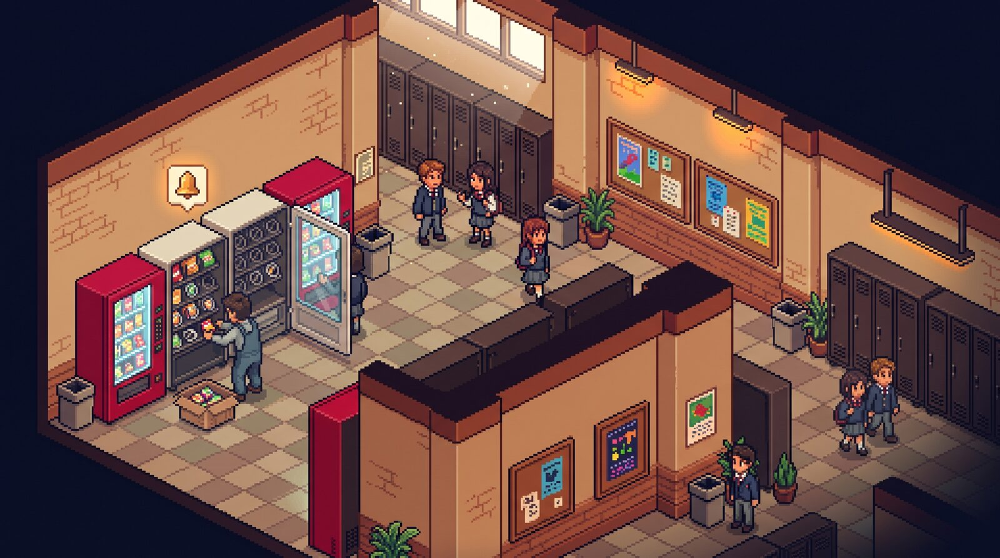
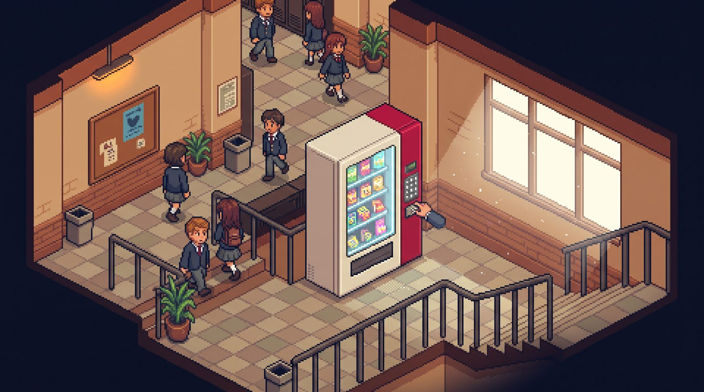
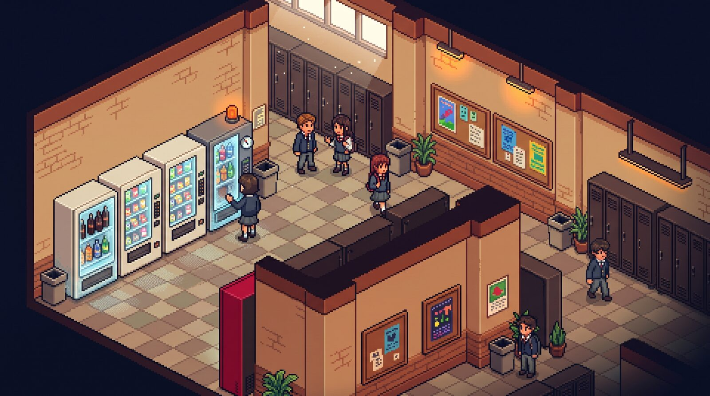

Capire la Richiesta:
Leggere da Analista
Il cliente non parla come un programmatore. Oggi impariamo a trasformare le sue richieste sul distributore automatico in dati, regole e domande chiare, prima di progettare qualsiasi cosa.

Il Bug dei 120 Euro
Il programma era scritto benissimo. Peccato che nessuno avesse chiesto l'unità di misura.
“Patatine — 120
Acqua — 60”
Per il cliente era ovvio: centesimi. Patatine a 1,20 €, acqua a 0,60 €.
“Patatine — 120 €
Acqua — 60 €”
Un cliente inserisce 2 € e la macchina risponde: “Credito insufficiente, mancano 118 €”.
Analisi dei Requisiti: il Primo Mestiere del Programmatore
Prima di progettare il distributore, qualcuno deve tradurre ciò che il cliente vuole davvero.
Il Cliente
Parla come parlaMescola richieste e chiacchiere, dà per scontate molte cose, dimentica i casi strani.
L'Analista (tu)
Legge, smonta, chiedeSepara i dati dal rumore, traduce le regole in confronti, scrive le domande da fare.
Requisiti Chiari
Nessuna ambiguitàDati con nome e valore, regole precise, risultati attesi, casi limite verificati.
Lo Schema I-P-O: il Filtro per Leggere una Richiesta
Ogni programma prende dati, li trasforma con delle regole e restituisce un risultato.
INPUT
Cosa mi DAI?I dati che la macchina riceve o conosce: monete, prezzi, quantità.
“inserisce 2,00 €, l'acqua costa 0,60 €”
ELABORAZIONE
Quali REGOLE?I calcoli e le condizioni che collegano i dati al risultato.
“se il credito è sufficiente… restituisci il resto”
OUTPUT
Cosa mi CHIEDI?Cosa deve fare o mostrare la macchina alla fine.
“eroga il prodotto e dà il resto”
Il Metodo dell'Analista in 5 Passi
Sempre nello stesso ordine, per ogni richiesta. Anche quando sembra banale.
Leggi due volte
1ª volta: cosa vuole il cliente.
2ª volta: caccia ai dati.
Evidenzia
Con i colori o con i simboli: dati, richiesta, regole, rumore.
Riformula
Una sola frase:
“La macchina deve…”
Scheda I-P-O
Input, Elaborazione e Output, con nomi e valori.
Prova & Domande
Prova con i numeri e il caso limite. Scrivi le domande per il cliente.
Il Kit dell'Evidenziatore: Colori e Simboli
Niente evidenziatori? Basta una penna e questi simboli.
Il Dizionario: Parole che Diventano Confronti
Il cliente non scrive ≥ o <: scrive “almeno”, “fino a”, “basta”. Traduciamo.
“almeno 3 € di credito”: con 3,00 € sì.
“al massimo 12 prodotti per spirale”: 12 sì, 13 no.
“più di 5 €”: con 5,00 € no.
“sotto i 2 pezzi”: il 2 è escluso.
“resto fino a 5 €”: il 5 è compreso.
“credito sufficiente”: credito ≥ prezzo.
“importo esatto”: credito = prezzo, resto 0.
“tutti tranne chi paga con la chiavetta”.
Le 5 Trappole delle Richieste del Cliente
Il cliente non vuole ingannarti… ma le sue richieste sono piene di tranelli.
1. Il Rumore
Saluti, storie e numeri che non servono.
“comprato nel 2019, 300 bicchieri a settimana”
2. Il Dato Nascosto
Non è scritto, ma serve: lo tiri fuori tu.
“tre monete da 50 cent” → ★ credito 1,50 €
3. Le Parole-Trappola
“Almeno” e “più di” sul caso limite si separano.
5 ≥ 5 VERO | 5 > 5 FALSO
4. Il Dato Mancante
Il cliente ha dimenticato qualcosa di indispensabile.
“quando sta per finire” → ? quanti pezzi
5. L'Unità di Misura
Euro o centesimi? Pezzi o confezioni? Gradi o percentuale?
“Patatine — 120” → ? 120 di cosa
Esempio Svolto: Il Resto Giusto
Da: Marta, responsabile distributori • Oggetto: distributore del piano terra
Ciao ragazzi! Sono Marta, gestisco i distributori del piano terra, quelli vicino alla palestra che all'intervallo delle 10:50 vengono presi d'assalto. Vorrei che la macchina, quando un cliente sceglie un prodotto, controllasse se il credito inserito è sufficiente. Se lo è, deve erogare il prodotto e restituire il resto; se non lo è, deve mostrare quanto manca. Per esempio: un cliente inserisce 2,00 € e sceglie una bottiglietta d'acqua da 0,60 €. Grazie mille e buona giornata!

groupsLo facciamo insieme
- Leggiamo due volte, ad alta voce.
- Voi dettate, io evidenzio.
- Scheda I-P-O e domande per Marta.
Il Resto Giusto: Smontiamo la Richiesta
Ciao ragazzi! Sono Marta, gestisco i distributori del piano terra, quelli vicino alla palestra che all'intervallo delle 10:50 vengono presi d'assalto. Vorrei che la macchina, quando un cliente sceglie un prodotto, controllasse se il credito inserito è sufficiente≥. Se lo è, deve erogare il prodotto e restituire il resto; se non lo è<, deve mostrare quanto manca. Per esempio: un cliente inserisce 2,00 € e sceglie una bottiglietta d'acqua da 0,60 €. Grazie mille e buona giornata!
altrimenti → mancano = prezzo − credito
Caso limite: credito 0,60 → eroga, resto 0,00 €
Ora Tocca a Voi: 5 Richieste da Analizzare
A coppie, con il foglio delle richieste, il quaderno e gli evidenziatori (o una penna).
Come si lavora
- ink_highlighter Sul foglio: evidenzia con colori o simboli.
- edit_note Sul quaderno: “La macchina deve…” e la scheda I-P-O.
- forum Prova & Domande: numeri, caso limite e almeno una domanda per Marta.
- block Niente codice né pseudocodice: oggi si analizza e basta.
Le 5 richieste (6 minuti l'una)
- coffee1. Bicchierini Esauriti → caccia al rumore
- toll2. La Gettoniera in Centesimi → dato nascosto
- redeem3. La Promo d'Autunno → parole-trappola
- notifications4. L'Avviso di Rifornimento → dati mancanti
- crisis_alert5. La Macchina del 2° Piano → tutte insieme!
Richiesta 1: Bicchierini Esauriti
Ciao, sono ancora Marta. Il distributore delle bevande calde del primo piano è un modello vecchiotto, grigio, comprato nel 2019, e il caffè lungo è il preferito della prof di italiano. Ogni bicchierino costa alla scuola 5 centesimi e d'inverno ne usiamo circa 300 a settimana. Il problema è che, quando i bicchierini finiscono, la macchina versa lo stesso il caffè… direttamente nello scarico! Vorrei che, quando un cliente sceglie una bevanda, la macchina controllasse se c'è ancora almeno un bicchierino: se c'è, prepara la bevanda e i bicchierini diminuiscono di uno; se non c'è, non prepara niente e mostra “Bicchieri esauriti”. Adesso nel tubo ci sono 40 bicchierini.

assignmentLa tua consegna
- Evidenzia (colori o simboli).
- Riformula: “La macchina deve…”
- Scheda I-P-O, prova e domande.
Occhio a: tanti numeri… quanti servono davvero?
Bicchierini Esauriti: Smontiamo la Richiesta
Ciao, sono ancora Marta. Il distributore delle bevande calde del primo piano è un modello vecchiotto, grigio, comprato nel 2019, e il caffè lungo è il preferito della prof di italiano. Ogni bicchierino costa alla scuola 5 centesimi e d'inverno ne usiamo circa 300 a settimana. Il problema è che, quando i bicchierini finiscono, la macchina versa lo stesso il caffè… direttamente nello scarico! Vorrei che, quando un cliente sceglie una bevanda, la macchina controllasse se c'è ancora almeno un bicchierino≥ 1: se c'è, prepara la bevanda e i bicchierini diminuiscono di uno; se non c'è= 0, non prepara niente e mostra “Bicchieri esauriti”. Adesso nel tubo ci sono 40 bicchierini.
se sì: i bicchierini scendono di 1
Caso limite: 1 bicchierino → prepara, ne restano 0.
Richiesta 2: La Gettoniera in Centesimi
Ciao! Il tecnico della ditta, simpaticissimo, mi ha spiegato che la gettoniera nuova ragiona tutto in centesimi, mentre sul listino i prezzi sono scritti in euro. Le patatine costano 1,20 €. Un cliente inserisce tre monete da 50 centesimi. La macchina deve restituire il resto usando soltanto monete da 10 centesimi. Il tecnico ha detto che ripasserà giovedì per controllare. Quante monete da 10 centesimi deve restituire la macchina?

assignmentLa tua consegna
- Evidenzia (colori o simboli).
- Riformula: “La macchina deve…”
- Scheda I-P-O, prova e domande.
Occhio a: euro e centesimi nella stessa frase!
La Gettoniera in Centesimi: Smontiamo la Richiesta
Ciao! Il tecnico della ditta, simpaticissimo, mi ha spiegato che la gettoniera nuova ragiona tutto in centesimi★ 1 € = 100 cent, mentre sul listino i prezzi sono scritti in euro. Le patatine costano 1,20 €. Un cliente inserisce tre monete da 50 centesimicredito = 3 × 50. La macchina deve restituire il resto usando soltanto monete da 10 centesimi. Il tecnico ha detto che ripasserà giovedì per controllare. Quante monete da 10 centesimi deve restituire la macchina?
taglio del resto = 10 cent • ★ 1 € = 100 cent
resto = credito − prezzo • monete = resto ÷ 10
Errore tipico: 1,50 − 120 = numero negativo!
Richiesta 3: La Promo d'Autunno
Buongiorno! Per festeggiare l'arrivo dell'autunno (e delle castagne!) lanciamo una promozione. Chi inserisce almeno 3 € di credito riceve uno snack in omaggio; chi inserisce più di 5 € riceve anche una bottiglietta d'acqua gratis. Attenzione: la promozione vale per tutti tranne chi paga con la chiavetta ricaricabile. Che omaggi spettano a un cliente che inserisce esattamente 5 € in monete?

assignmentLa tua consegna
- Evidenzia (colori o simboli).
- Riformula: “La macchina deve…”
- Scheda I-P-O, prova e domande.
Occhio a: “almeno”, “più di”, “tranne”. E proprio 5 €?
La Promo d'Autunno: Smontiamo la Richiesta
Buongiorno! Per festeggiare l'arrivo dell'autunno (e delle castagne!) lanciamo una promozione. Chi inserisce almeno≥ 3 € di credito riceve uno snack in omaggio; chi inserisce più di> 5 € riceve anche una bottiglietta d'acqua gratis. Attenzione: la promozione vale per tutti tranne chi paga con la chiavetta ricaricabile≠. Che omaggi spettano a un cliente che inserisce esattamente 5 € in monete?
soglie: 3 € (snack) e 5 € (acqua)
snack se credito ≥ 3 • acqua se credito > 5
Risposta: solo lo snack. Con la chiavetta: nessun omaggio.
Richiesta 4: L'Avviso di Rifornimento
Ciao ragazzi, ultima richiesta della settimana, promesso! Ogni spirale della macchina snack contiene al massimo 12 prodotti. Vorrei che la macchina mi mandasse un avviso quando una spirale sta per finire, così il tecnico passa a riempirla prima che i ragazzi restino a bocca asciutta. Il tecnico di solito passa il martedì mattina. Ah, l'avviso deve arrivare anche quando una spirale è proprio vuota. Grazie!

assignmentLa tua consegna
- Evidenzia (colori o simboli).
- Riformula: “La macchina deve…”
- Scheda I-P-O, prova e domande.
Occhio a: potresti programmarla davvero domani? Cosa ti manca?
L'Avviso di Rifornimento: Smontiamo la Richiesta
Ciao ragazzi, ultima richiesta della settimana, promesso! Ogni spirale della macchina snack contiene al massimo≤ 12 prodotti. Vorrei che la macchina mi mandasse un avviso? come e a chi quando una spirale sta per finire? quanti pezzi, così il tecnico passa a riempirla prima che i ragazzi restino a bocca asciutta. Il tecnico di solito passa il martedì mattina. Ah, l'avviso deve arrivare anche quando una spirale è proprio vuota= 0. Grazie!
soglia = ? MANCA
(la spirale vuota, 0, è già compresa)
? Avviso via email, SMS o display? Un avviso per spirale o uno riassuntivo?
Richiesta Finale: La Macchina del Secondo Piano
Ciao a tutti! Dopo la riunione di ieri con il preside (due ore, che fatica!) abbiamo deciso: dalla prossima settimana la macchina snack del secondo piano accetterà solo monete da 50 centesimi, 1 € e 2 €. Il cliente inserisce le monete e digita il codice dello snack. Se lo snack è esaurito, la macchina restituisce tutte le monete inserite. Se invece è disponibile e il credito basta, eroga lo snack e dà il resto. Se il credito non basta, aspetta altre monete. Esempio: un cliente inserisce una moneta da 1 € e una da 50 centesimi e digita B2, i cracker, che costano 1,30 €. Nella spirale B2 ne restano 4.

assignmentLa tua consegna
- Evidenzia (colori o simboli).
- Riformula: “La macchina deve…”
- Scheda I-P-O, prova e almeno 2 domande.
Occhio a: tre strade diverse e tutte le trappole!
La Macchina del Secondo Piano: Smontiamo la Richiesta
Ciao a tutti! Dopo la riunione di ieri con il preside (due ore, che fatica!) abbiamo deciso: dalla prossima settimana la macchina snack del secondo piano accetterà solo monete da 50 centesimi, 1 € e 2 €. Il cliente inserisce le monete e digita il codice dello snack. Se lo snack è esaurito= 0, la macchina restituisce tutte le monete inserite. Se invece è disponibile e il credito basta≥, eroga lo snack e dà il resto. Se il credito non basta<, aspetta altre monete? quanto. Esempio: un cliente inserisce una moneta da 1 € e una da 50 centesimi★ credito 1,50 € e digita B2, i cracker, che costano 1,30 €. Nella spirale B2 ne restano 4.
prezzo B2 = 1,30 € • quantità B2 = 4
2. credito ≥ prezzo → snack + resto (credito − prezzo)
3. altrimenti → attesa
? E se in cassa non ci sono monete per il resto?
Errori Tipici e Checklist dell'Analista
Prima di dire “ho capito cosa vuole il cliente”, controlla con il compagno.
Gli errori più comuni
- closeUsare tutti i numeri del messaggio (anche il 2019).
- closeMescolare euro e centesimi nello stesso calcolo.
- closeLeggere “almeno” come “più di” (e viceversa).
- closeInventare la soglia invece di chiederla.
- closeDimenticare i casi che il cliente non ha scritto.
La checklist
- check_boxHo letto la richiesta due volte?
- check_boxHo barrato il rumore?
- check_boxOgni dato ha nome, valore e unità?
- check_boxHo tradotto le regole in confronti?
- check_boxHo provato il caso limite?
- check_boxHo scritto le domande per il cliente?
Ultima Prova: La Spia del Frigo
Il frigorifero della macchina delle bibite deve accendere la spia di manutenzione se la temperatura interna supera gli 8 gradi. Il frigorifero è stato pulito martedì dal tecnico. In questo momento il termometro segna 8 gradi. La spia si accende?

confirmation_numberSu un foglietto
- Riscrivi i dati con nome, valore e unità.
- Scrivi la regola come confronto.
- Rispondi con la prova a mano.
La Spia del Frigo: Smontiamo la Richiesta
Il frigorifero della macchina delle bibite deve accendere la spia di manutenzione se la temperatura interna supera> gli 8 gradi. Il frigorifero è stato pulito martedì dal tecnico. In questo momento il termometro segna 8 gradi. La spia si accende?